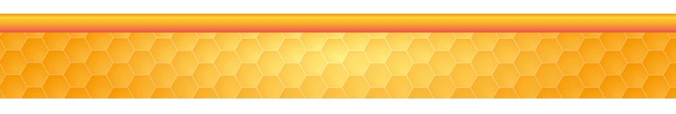

El Atlas Nacional de las Abejas y Derivados Apícolas integra la información existente en torno a la apicultura en México, desde las características de la miel, hasta aspectos relacionados con la actividad económica en torno a las especies domesticadas, de carácter técnico referentes a la crianza de abejas, los apoyos gubernamentales que existen y el volumen de producción de las entidades federativas, entre otros temas, acompañada de datos históricos sobre la apicultura.
Dada la importancia del tema, y en cumplimientorgda con el artículo 3° de la Ley del Sistema Nacional de Información Estadística y Geográfica (SNIEG), que establece la finalidad de suministrar a la sociedad y al Estado, información de calidad, pertinente, veraz y oportuna, a efecto de coadyuvar al desarrollo nacional, el Instituto Nacional de Estadística y Geografía (INEGI), en coordinación con la Secretaría de Agricultura y Desarrollo Rural (SADER, antes SAGARPA), y otras Unidades de Estado que integran el SNIEG, presentan la versión preliminar del proyecto denominado Atlas Nacional de las Abejas y Derivados Apícolas, mismo que ya se encuentra en proceso de publicación oficial.
Este proyecto compila por primera vez en un mismo lugar, tanto información que ya se encuentra disponible en publicaciones y páginas web de las Unidades de Estado que colaboran en este proyecto, y de otros estudios relacionados, como datos que dichas unidades acordaron compartir con el INEGI, y que se han analizado y procesado para presentarse en forma dinámica, a efecto de ofrecer a usuarios específicos y al público en general, toda la información disponible hasta el momento en un único sitio web, con datos verificables y actualizables.

Actualmente existe una fuerte tendencia a realizar Investigación Reproducible, es decir, presentar reportes científicos o publicaciones donde los datos y el código utilizado estén disponibles para que otros puedan verificar los hallazgos, o enriquecerlos al contribuir en ellos, lo cual promueve la trasparencia y confianza en los resultados. En ese contexto, se presenta el Atlas Nacional de las Abejas y Derivados Apícolas, con la finalidad de tener un producto robusto y que sea punto de partida para detectar las necesidades de información sobre la apicultura, y con ello impulsar el desarrollo de esta importante actividad, de manera responsable y sustentable.
El Atlas Nacional de las Abejas y Derivados Apícolas surge de la necesidad de identificar la situación en que se encuentran estos insectos, la cual es preocupante. El informe de la Plataforma Intergubernamental Científico-Normativa sobre Diversidad Biológica y Servicios de los Ecosistemas de las Naciones Unidas (IPBES, por sus siglas en inglés) advierte que el 40% de los polinizadores invertebrados, en particular algunos tipos de abejas y mariposas, podrían estarse enfrentando en este momento, a un proceso de extinción.
Las abejas no son los únicos polinizadores, ya que hay muchos otros insectos que realizan esa labor. De hecho, el término abejas es muy inconcreto, pues existen unas 20,000 especies de abejas, de las que sólo un 5% son abejas de la miel o Apis mellifera. Es de resaltar que la abeja de la miel es una de las polinizadoras más eficientes, pues prospera en casi todos los ambientes del planeta, trabaja la mayor parte del año, forma poblaciones muy numerosas, y cada abeja suele ser fiel a un tipo de flor concreta, aumentando por tanto el índice de reproducción de las especies vegetales.
La zoopolinización desempeña una función vital como regulador de los ecosistemas en la naturaleza. A nivel mundial, casi el 90% de las fitoespecies florales silvestres dependen, al menos parcialmente, de la transferencia de polen por los animales. Esas plantas son fundamentales para el funcionamiento continuo de los ecosistemas en tanto proporcionan alimentos, constituyen hábitats, y proveen otros recursos para una amplia variedad de otras especies. De la misma forma, se estima que entre 5% y 8% de la actual producción agrícola mundial depende directamente de la zoopolinización.
En este contexto, el papel de la abeja melífera occidental se vuelve preponderante, debido a que es el polinizador gestionado de mayor diseminación en todo el planeta, y a nivel mundial existen alrededor de 81 millones de colmenas que, según estimaciones, producen anualmente 1.6 millones de toneladas de miel. La apicultura proporciona, en este sentido, una importante fuente de ingresos para muchas personas, sobre todo en el ámbito rural.
La protección de las abejas y de polinizadores, y en general de la biodiversidad, pasa por el conocimiento de la especie. Este trabajo pretende contribuir en dicha tarea con al menos una de ellas, que es la más cotizada por sus productos.
A modo ilustrativo, se muestra el siguiente video del 2014, en el que una tienda situada en Providence, Rhode Island, en los Estados Unidos, realiza un experimento muy interesante, retirando de sus anaqueles todos aquellos productos cuya existencia es posible gracias a la intervención de las abejas como polinizadores de sus cultivos. El resultado es muy impactante.
El Atlas surge como una necesidad de información explicitada en un exhorto enviado por la Cámara de Diputados en septiembre de 2017, en el que se solicita al INEGI que, con base en sus facultades como organismo coordinador del Sistema Nacional de Información Estadística y Geográfica, emprenda la elaboración de un Atlas Nacional de Abejas y Derivados Apícolas, para ser el encargado de recolectar, sistematizar e integrar la información necesaria para el Atlas con apoyo de la SADER (entonces SAGARPA).
La facultades a que se refiere el párrafo anterior, están contempladas en la Ley del Sistema Nacional de Información Estadística y Geográfica, donde se mencionan los indicadores referentes a especies animales en su artículo 27: “El Subsistema Nacional de Información Geográfica y del Medio Ambiente, en su componente del medio ambiente, procurará describir el estado y las tendencias del medio ambiente, considerando los medios naturales, las especies de plantas y animales, y otros organismos que se encuentran dentro de estos medios. El Subsistema referido en el párrafo anterior, deberá generar, como mínimo, indicadores sobre los siguientes temas: atmósfera, agua, suelo, flora, fauna, residuos peligrosos y residuos sólidos.”
Por otra parte, el artículo 28 de la misma, complementa las facultades del INEGI al respecto: “El Instituto elaborará, con la colaboración de las Unidades, los indicadores a que se refieren los dos artículos anteriores a partir de la información básica proveniente de: I. El Sistema Nacional de Información Ambiental y de Recursos Naturales; II. Un sistema integrado de inventarios y encuestas sobre recursos naturales y medio ambiente, y III. Los registros administrativos que permitan obtener Información en la materia.”
Claramente, la ley faculta al INEGI no sólo como generador primario de información, sino también como entidad que puede coordinarse con otras Unidades del Estado para producir indicadores o información a partir de datos que dichas unidades posean.
Del mismo modo, en el Reglamento Interior del INEGI, documento que reglamenta la forma y términos en que el Instituto ejerce las atribuciones y facultades que la ley le confiere, se describen las siguientes atribuciones específicas de la Dirección General de Geografía y Medio Ambiente:
Artículo 24, Fracción VII. Coadyuvar en el marco del Subsistema Nacional de Información Geográfica y del Medio Ambiente, en su componente del medio ambiente, en la descripción del estado y las tendencias del medio ambiente, considerando los medios naturales, las especies de plantas y animales, y otros organismos que se encuentran dentro de estos medios.
Artículo 24, Fracción X. Coordinar la integración y actualización del acervo de información geográfica y del medio ambiente, al cual se incorporará la generada por las Unidades del Estado en los términos que al efecto determine la Dirección General de Coordinación del Sistema Nacional de Información Estadística y Geográfica.
Artículo 24, Fracción XXXII. Generar e integrar estadísticas básicas y derivadas con base en encuestas en hogares y en establecimientos económicos, en encuestas especiales, en los censos nacionales de gobierno, y en la explotación de registros administrativos que aporten información sobre el estado de los recursos naturales y el medio ambiente.
Y para la Dirección General Adjunta de Recursos Naturales y Medio Ambiente (DGARNMA), dicho reglamento confiere también atribuciones al respecto:
Artículo 26, Fracción IV. Coadyuvar en la integración de la información generada por las distintas Unidades del Estado productoras de datos estadísticos de recursos naturales y medio ambiente, en coordinación con la Dirección General Adjunta de Integración de la Información.
Artículo 26, Fracción VI. Coordinar y concertar con las Unidades del Estado generadoras de información las acciones necesarias para el diseño de la infraestructura conceptual y la producción de información estadística básica e indicadores del medio ambiente para unificar la generación de información por parte de las Unidades del Estado.
Artículo 26, Fracción XIX. Integrar, con la colaboración de las Unidades del Estado, un sistema de inventarios y encuestas sobre recursos naturales y medio ambiente, cuya información permita la elaboración de indicadores, como mínimo, sobre los siguientes temas: recursos naturales y clima, así como atmosfera, agua, suelo, flora, fauna, residuos peligrosos y residuos sólidos.
Artículo 26, Fracción XXIII. Coordinar y concertar con las Unidades del Estado acciones para la producción y actualización de información de recursos naturales y medio ambiente.
En este conjunto de esfuerzos que han dado origen al Atlas Nacional de las Abejas y Derivados Apícolas, el INEGI funge en su calidad de organismo coordinador del Sistema Nacional de Información Estadística y Geográfica, con el fin de realizar las gestiones y el acopio de información necesario ante otras Unidades del Estado, asi como el diseño, sistematización, procesamiento, difusión y actualización de los datos del Atlas.